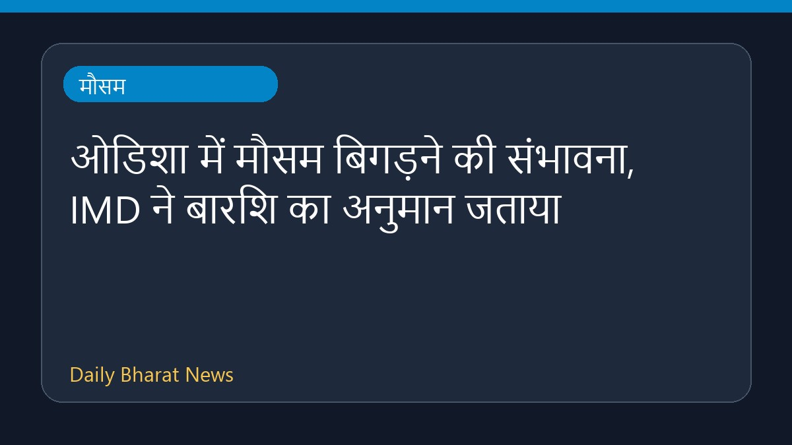
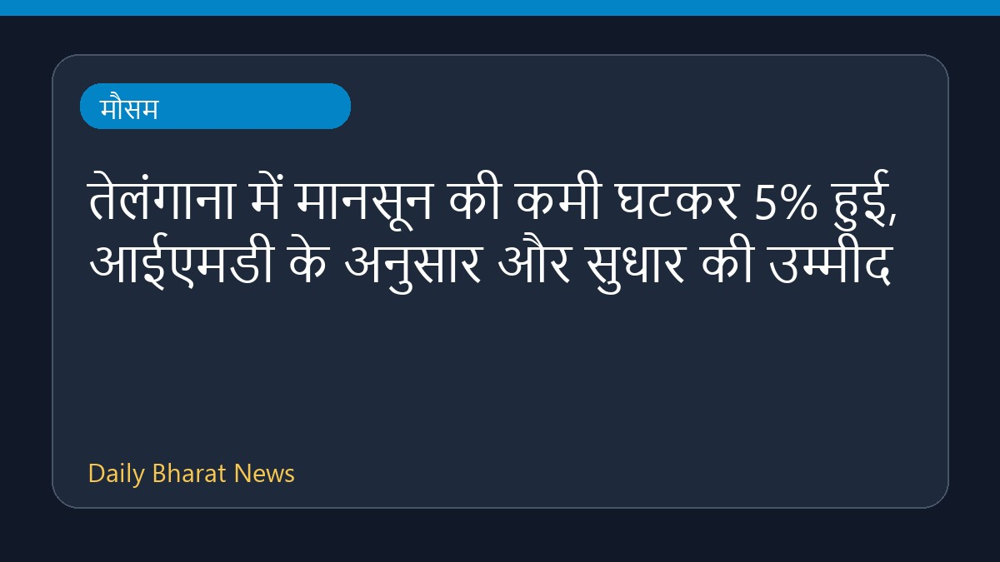
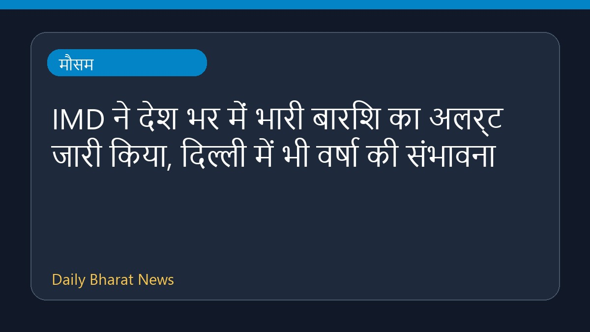
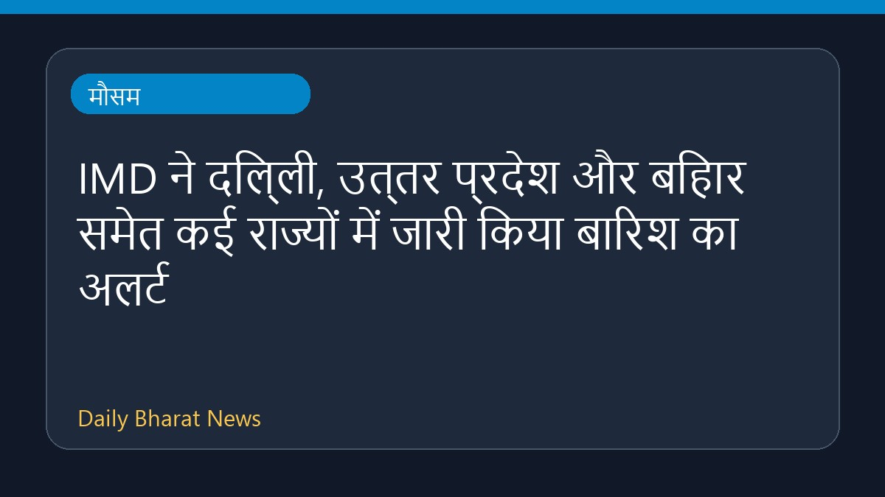

ओडिशा में मौसम बिगड़ने की संभावना, IMD ने बारिश का अनुमान जताया

भारत मौसम विज्ञान विभाग (IMD) ने ओडिशा में एक नए दौर की बारिश और खराब मौसम की संभावना जताई है। मौसम विभाग से प्राप्त जानकारी के अनुसार, आने वाले दिनों में राज्य के विभिन्न हिस्सों में बारिश का यह दौर देखने को मिल सकता है। हालांकि, इस संबंध में विस्तृत आंकड़े और विशिष्ट जिलों की जानकारी अभी सीमित रूप में ही उपलब्ध कराई गई है। स्थानीय प्रशासन और संबंधित विभागों द्वारा मौसम की स्थिति पर लगातार नजर रखी जा रही है ताकि किसी भी संभावित बदलाव से समय रहते निपटा जा सके।
मूल स्रोत: Weather News Sources
IMD forecasts wet spell in Odisha - The Hans India ↗
IMD forecasts wet spell in Odisha - The Hans India ↗
संबंधित खबरें

मौसमतेलंगाना में मानसून की कमी घटकर 5% हुई, आईएमडी के अनुसार और सुधार की उम्मीद

मौसमIMD ने देश भर में भारी बारिश का अलर्ट जारी किया, दिल्ली में भी वर्षा की संभावना

मौसमIMD ने दिल्ली, उत्तर प्रदेश और बिहार समेत कई राज्यों में जारी किया बारिश का अलर्ट
 मौसम
मौसम